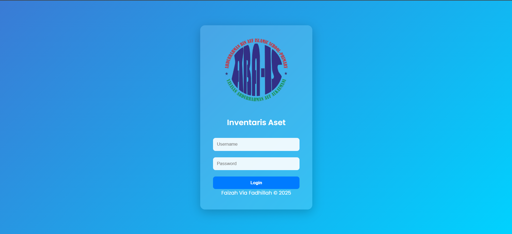
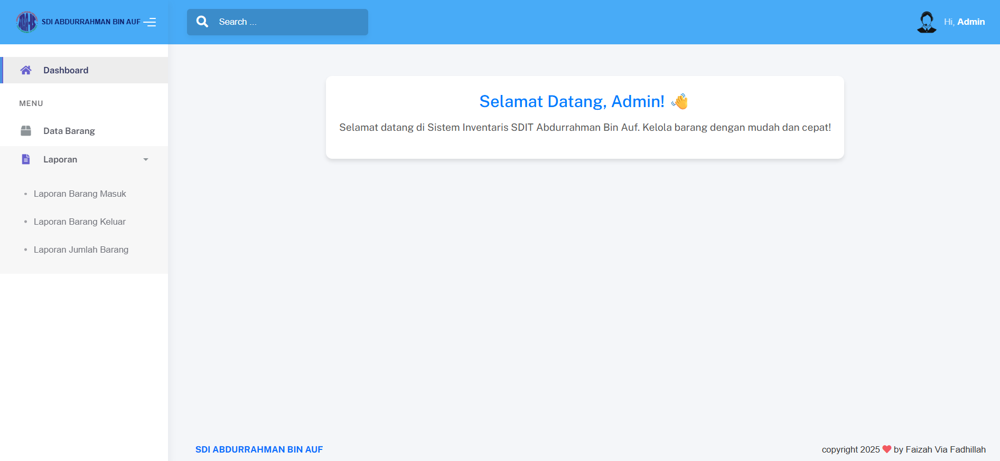
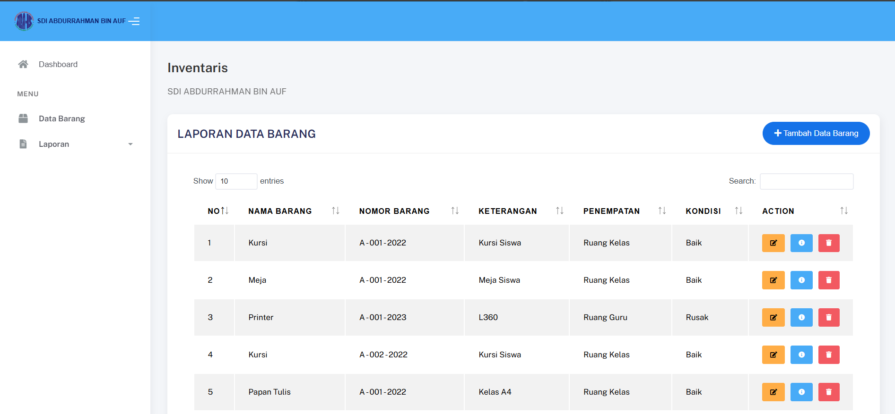
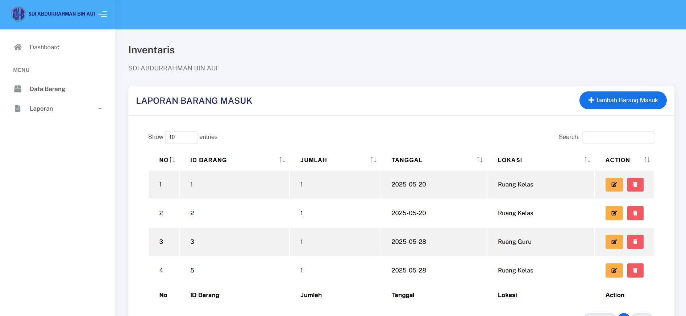
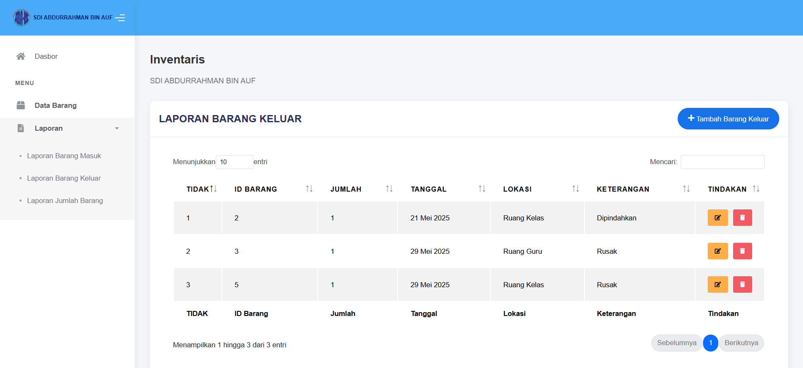
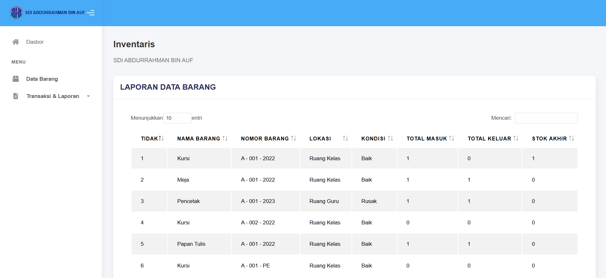

Masalah
Kebutuhan pengelolaan aset sekolah memerlukan pencatatan dan pemantauan inventaris yang lebih terstruktur.
Sistem Manajemen Inventaris Aset Berbasis Web
Merancang dan membangun sistem informasi inventaris aset berbasis web berdasarkan kebutuhan pengelolaan dan pemantauan aset di lingkungan sekolah.
Proyek ini dirancang dan dibangun untuk membantu pengelolaan aset tetap dan bergerak di lingkungan sekolah melalui sistem berbasis web. Sistem mencatat dan memantau inventaris, barang masuk dan keluar, stok, serta laporan.
Kebutuhan pengelolaan aset sekolah memerlukan pencatatan dan pemantauan inventaris yang lebih terstruktur.
Membantu proses pengelolaan aset melalui pencatatan barang masuk dan keluar, pemantauan stok, autentikasi pengguna, dan laporan stok akhir.
Perancangan berangkat dari kebutuhan pengelolaan aset di lingkungan sekolah. Sistem perlu menyediakan pencatatan data inventaris dan transaksi, pemantauan stok, serta akses dan keluaran laporan yang mudah dikelola.
Mencatat dan mengelola data barang inventaris.
Mencatat transaksi barang yang masuk ke inventaris.
Mencatat transaksi barang yang keluar dari inventaris.
Memantau jumlah stok berdasarkan data inventaris dan transaksi.
Melihat rekap stok barang pada laporan inventaris.
Login untuk mengakses sistem dan logout untuk mengakhiri sesi.
Alur pengembangan disusun berdasarkan kebutuhan dan implementasi fitur inventaris, tanpa menetapkan metode formal tertentu.
Memahami kebutuhan pencatatan dan pemantauan aset sekolah.
Merancang alur fitur inventaris, transaksi, stok, dan laporan.
Menyiapkan struktur penyimpanan untuk data barang dan transaksi.
Membangun sistem berbasis web dengan PHP dan MySQL.
Memeriksa fungsi pencatatan, transaksi, pemantauan stok, dan laporan.
Sistem berbasis web merangkum pencatatan inventaris, transaksi barang, pemantauan stok, dan laporan.
Mengelola data barang inventaris, termasuk menambah, mengedit, menghapus, dan melihat detail barang.
Mencatat data barang yang masuk ke inventaris.
Mencatat data barang yang keluar dari inventaris.
Memantau kondisi dan jumlah stok.
Menyediakan rekap stok akhir berdasarkan data inventaris dan transaksi.
Login dan logout untuk mengakses serta mengakhiri sesi sistem.
Pratinjau asli halaman masuk dari proyek.






Saya merancang dan membangun sistem ini berdasarkan kebutuhan pengelolaan aset di lingkungan sekolah, dari analisis hingga pemeriksaan fungsi.
Menganalisis kebutuhan, merancang alur sistem, dan menyiapkan struktur basis data serta fitur.
Membangun antarmuka dan sisi server, mengintegrasikan database, serta mengimplementasikan fitur inventaris.
Menguji fungsi sistem dan mempelajari analisis kebutuhan, perancangan basis data, pengembangan aplikasi web, pengelolaan inventaris, serta pemeriksaan fitur.